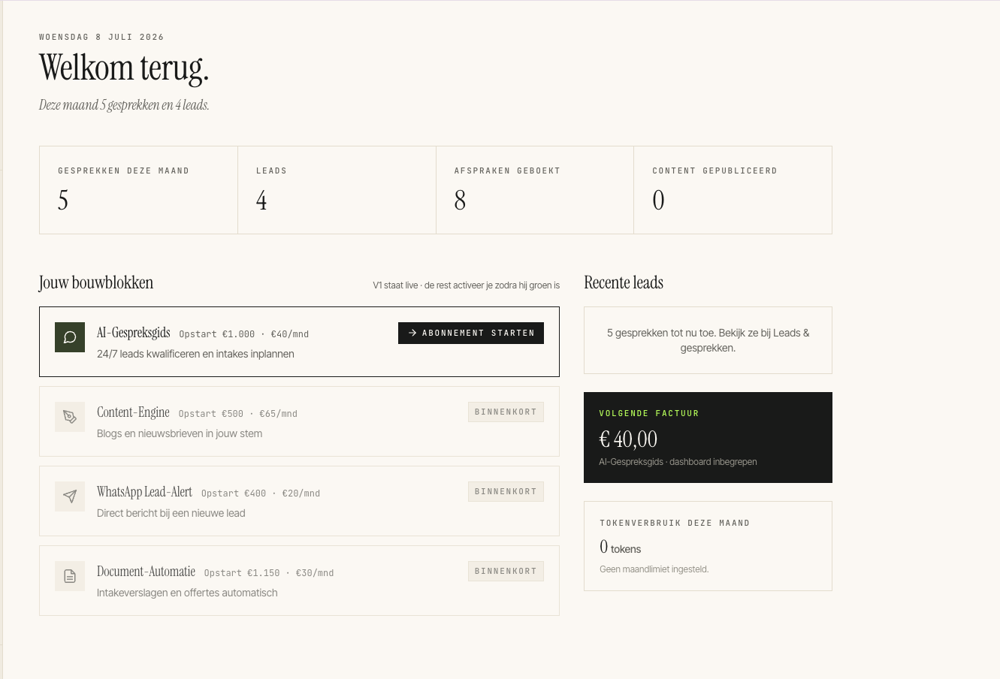

Elk bouwblok neemt een stuk van het klanten-werk over. Zet aan wat je nodig hebt, breid later uit.
Iris, onze AI-collega op je site, vangt je websitevragen op, herkent waar het over gaat en zet alleen de juiste intakes in je agenda. Geen ruis, alleen gesprekken die ertoe doen.
Schrijft blogs en posts in jouw stem, zodat nieuwe mensen je überhaupt vinden. Jij keurt goed of wijzigt met één klik.
Een appje bij elke lead. Typ terug wat er moet gebeuren en de AI voert het uit, op basis van je eigen documenten. Jij stuurt vanaf de zijlijn.
Onder alle bouwblokken ligt één kennisbank: jouw documenten, jouw aanpak, jouw toon. Elk teamlid put daaruit, dus de antwoorden zijn van jou en niet generiek.
Jij beheert de kennisbank zelf en beslist wat erin komt.
Het systeem leert van de echte gesprekken en stelt verbeteringen voor. Een mens houdt de regie: niets verandert zonder jouw akkoord.
Verzamelt geanonimiseerd de vragen die Iris die dag kreeg.
Kijkt waar een antwoord beter of vollediger had gekund.
Stelt aanvullingen voor de kennisbank op. Niets gaat live.
Jij kiest wat erin komt. Niets verandert zonder akkoord.
Eén dashboard waar alles samenkomt. Zet een bouwblok aan zodra je eraan toe bent, en weer uit als het even niet hoeft.
Opzegbaar per maand, geen migratie. Zet je een blok later weer aan, dan draait alles meteen weer, precies waar je gebleven was.

Wij doen het zware werk. Jouw inbreng blijft klein: één gesprek, je documenten, en een korte controle.
Eén gesprek over je bedrijf, doelgroep en aanpak.
We lezen je site en bouwen de kennisbank. Jij reviewt.
Jouw kleuren en toon. Agenda en WhatsApp gekoppeld.
25+ testgesprekken. Wij fixen wat eruit komt.
Op je bestaande site, wat je ook gebruikt: WordPress, Webflow, Squarespace of custom HTML. Één scriptregel of een DNS-koppeling, geen migratie of redesign.
Voor go-live voeren we 25+ testgesprekken om hallucinaties en off-topic-antwoorden te vinden. Bij twijfel schakelt de AI door naar een intake met jou, in plaats van zelf inhoudelijk advies te geven. Zo blijft ze binnen jouw scope.
Ja. Alles is modulair. Je begint met de AI-Gespreksgids en schakelt de Content-Engine, WhatsApp-afstandsbediening en Document-Automatie bij vanuit je dashboard, wanneer je eraan toe bent. Uitzetten kan net zo makkelijk.
Nee. Het verbruik zit gecapt en staat transparant in je dashboard, tegen een vaste maandprijs per bouwblok. Je weet vooraf waar je aan toe bent.
Weinig. De onboarding is één gesprek, je documenten en een korte controle. Daarna beheer je zelf je content en je kennisbank, precies zoveel als je wilt.
Ja. Een avond-collega verzamelt 's nachts geanonimiseerd de vragen en stelt verbeteringen voor de kennisbank voor. Jij keurt goed; niets verandert zonder jouw akkoord.